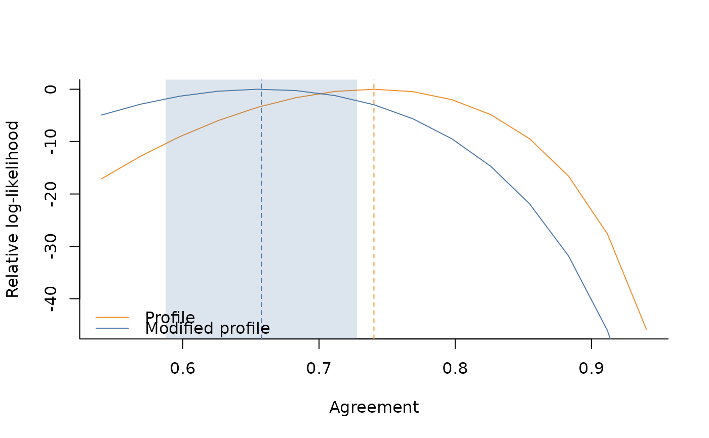

Plot relative log-likelihood
Arguments
- D
output from get_range_ll
- M_EST
agreement estimate from modified profile likelihood
- P_EST
agreement estimate from profile likelihood
- M_SE
standard error for agreement estimate from modified profile likelihood
- P_SE
standard error for agreement estimate from profile likelihood
- CONFIDENCE
Confidence level to construct confidence intervals
Examples
set.seed(321)
# setting dimension
items <- 50
budget_per_item <- 5
n_obs <- items * budget_per_item
workers <- 50
# item-specific intercepts to generate the data
alphas <- runif(items, -2, 2)
# true agreement (between 0 and 1)
agr <- .6
# generate continuous rating in (0,1)
dt_oneway <- sim_data(
J = items,
B = budget_per_item,
AGREEMENT = agr,
ALPHA = alphas,
DATA_TYPE = "continuous",
SEED = 123
)
# estimation via oneway specification
fit <- agreement(
RATINGS = dt_oneway$rating,
ITEM_INDS = dt_oneway$id_item,
WORKER_INDS = dt_oneway$id_worker,
METHOD = "modified",
NUISANCE = c("items"),
VERBOSE = TRUE
)
#>
#> DATA
#> - Detected 50 items and 49 workers.
#> - Detected continuous data on the (0,1) range.
#> - Average number of observed ratings per item is 5.
#> - Average number of observed ratings per worker is 5.1.
#>
#> MODEL PARAMETERS
#> - Constant effects: workers
#> - Nuisance effects: items
#> Non-adjusted agreement: 0.740346
#> Adjusted agreement: 0.657683
#> Done!
# get standard error and confidence interval
ci <- get_ci(fit)
ci
#> $agreement_est
#> [1] 0.6576834
#>
#> $agreement_se
#> [1] 0.0358485
#>
#> $agreement_ci
#> [1] 0.5874216 0.7279452
#>
# compute log-likelihood over a grid
range_ll <- get_range_ll(fit)
# utility plot function for relative log-likelihood
plot_rll(
D = range_ll,
M_EST = fit$modified$agreement,
P_EST = fit$profile$agreement,
M_SE = ci$agreement_se,
CONFIDENCE=.95
)
